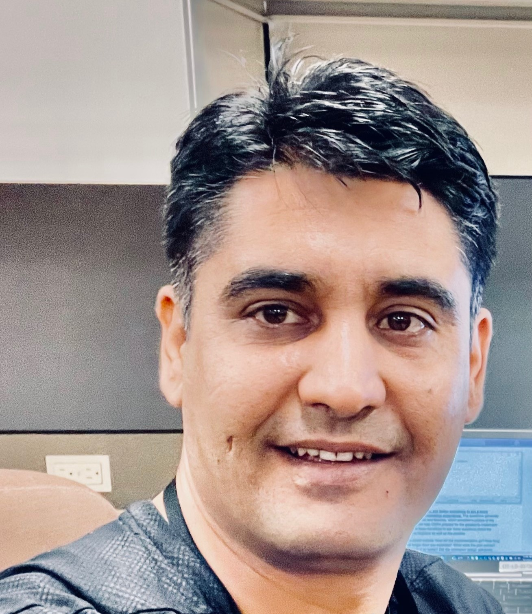

Zabi Aryan

OBJECTIVE:
Highly motivated professional with extensive experience in software development, analytics,
and computer security, seeking to apply versatile and team-oriented skills in a dynamic
business environment that values innovative problem solving and industry leadership.
EDUCATION:
-
California State University, Sacramento. Expected August 2024
- Bachelor of Computer Science.
-
Sacramento City College, Sacramento. Graduated December 2021
- Associate of Computer Science.
WORK EXPERIENCE:
Student Assistant: California Department of Technology.
August 2023-Present
- Gathered data to enhance the Lesson Learned System.
- Investigated SharePoint databases and retrieved PIER data for lesson extraction.
- Analyzed Post-Implementation Evaluation Reports to extract valuable lessons for future project success.
- Crafted impact statements in PowerApps to document lessons learned.
- Formulated recommendation statements in PowerApps to contribute to the Lesson Learned repository.
- Extracted data from Project Approval Lifecycle (PAL) Statewide Information Management Manual (SIMM) and added to the Data Dictionary.
CS intern: California Mobility Center
June 2022 September 2022
- Researched software solutions designed to evaluate and quantify ESL students English writing, reading, and speaking skills.
- Researched scenarios and identified methods to sync headsets with one or two phones aimed at using google Translate for a job interview.
- Building regional partner relationships and responsibilities map in kumu.io.
TECHNICAL SKILLS
- Programming Languages: C, C++, Java, Assembly languages, OOP, SQL, UNIX, JavaScript, React and Spring Boot.
- Database management: SQL and Firbase
- Software Management: Agile Methodology with Scrum and Kanban Framework.
AWARDS AND CERTIFICATIONS
- Tech Talent:Full Stack Software Development. JavaScript, HTML, CSS, React, DOM, Bootstrap, Java, Spring boot and SQL.
OTHER